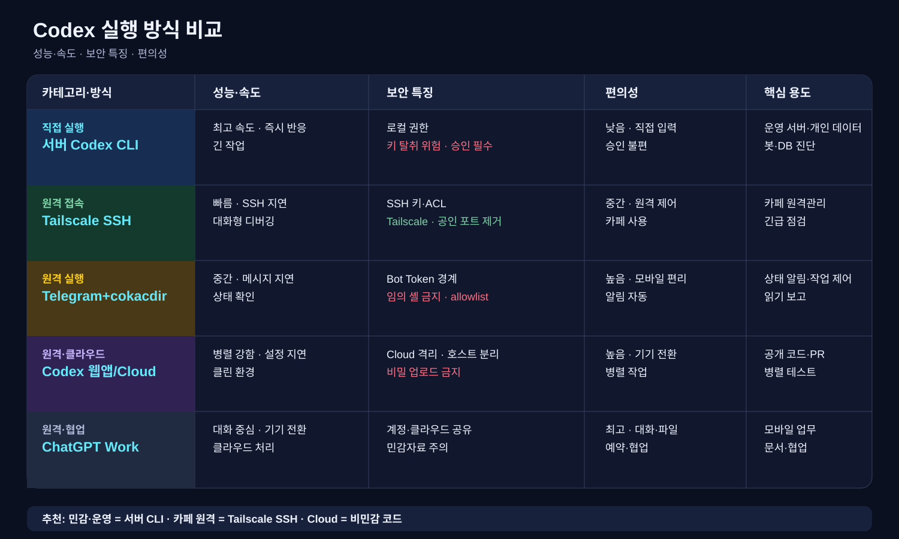

How I work — FDE operating model
데모가 아니라 실제 업무에 남는 시스템을 만든다. 매 배포는 같은 루프를 탄다.
1 · Reframe
고객 업무를 먼저 듣고 문제를 다시 정의한다. "AI가 판단"이 아니라 "사람이 더 빨리 판단하게".
2 · Ship the minimum
2시간~며칠 안에 돌아가는 최소 시스템을 낸다. 완벽한 설계보다 동작하는 결과.
3 · Divide the tools
로컬 파이프라인=눈, LLM=손, MCP=근거, 사람=최종판단. 각자 경계를 명확히.
4 · Guardrail first
개인정보 격리·환각 차단·human-in-the-loop을 기능보다 먼저 건다.
5 · Measure
처리시간·수정량·재사용률·기대값 같은 숫자로 채택 여부를 판정한다.
6 · Hand off
떠난 뒤에도 남을 문서·프롬프트·폴더 구조를 남겨 팀이 스스로 확장하게.
Selected work
파산 변호사 사건검토 워크플로우
문제: 월 12건 반복 문서검토 병목 + 극도로 민감한 개인정보.
시스템: 로컬 Python 마스킹 리더 → Codex 검토패킷 생성 → 법제처 MCP 근거확인. 원문은 고객 기기를 벗어나지 않음.
결과: 2시간 만에 동작하는 검토패킷 + 고객이 스스로 자기 skill을 만들기 시작(자립 신호).
KIS 모의투자 — 게이트형 자율 워크플로우
문제: "예측 정확도"가 아니라 수익·손익비·MDD로 검증되는 자율 의사결정 시스템이 필요.
시스템: 신호→집행 분리, 하드 리스크 가드레일(단일/일일/MDD), 배포 전 통과해야 하는 eval gate, 500일 검증 루프.
배운 것: 백테스트 과적합 탐지 + 킬스위치로 지는 전략 즉시 차단.
전국 회생법원 매각공고 모니터 MCP
흩어진 공공 데이터(회생법원 매각공고)를 질의 가능한 MCP 도구로. LLM이 기억이 아니라 실데이터를 조회하게.
OLED 수명 분석 웹앱
물리 기반 수명 모델을 현업이 직접 쓰는 셀프서비스 도구로. 반복 계산을 재현 가능한 워크플로우로 전환.
Telegram + Codex 오케스트레이션
휴대폰 한 대로 다중 에이전트(지시·실행·검수)를 조율. 원격에서 지시만 흐르고 실행·데이터는 기기 안에.
제조·품질 조직 AI 도입 세미나 & 외부 강의
한 일: 품질·연구개발 엔지니어가 Codex·MCP·다중에이전트를 실제 업무에 쓰도록 실습형 사내 세미나 진행. 제조 엔지니어 대상 AI 활용 외부 강의도 병행.
왜 FDE인가: 비개발 도메인 전문가를 프런티어 도구에 온보딩하고 채택까지 끌고 가는 일 — 딱 FDE의 핵심.
세미나 자료: AI 활용 세미나 ↗ · OLED 품질·수명 평가 세미나 ↗ · seminar lab repo ↗
KOSPI 예측 — Codex vs Claude 채점·복기 시스템
두 모델의 일일 예측을 자동 채점·복기하는 평가 하네스. 성능을 숫자로 비교하고, 오늘의 실패를 내일의 개선 규칙으로 되먹임.
FDE 포인트: "그럴듯함"이 아니라 측정 가능한 평가 게이트로 판단한다.
Field Journal
AI로 실제 문제를 해결한 패턴 라이브러리 — 문제 정의·경계 설계·검증. 이력서 문장의 반복이 아니라 포트폴리오 · FDE 인터뷰 사례은행 · 재사용 배포 패턴을 동시에 담는다. 전체 저널 →
코드보다 먼저 문제를 배포하라
FDE의 산출물은 코드가 아니라 고객이 반복해 쓰는 새로운 업무 방식. 파산 변호사 온사이트 + Problem-to-Deployment Canvas.
problem-firstdeploymenthandoff-asset
토큰이 어디서 새는지 먼저 보라
비용 최적화는 짧은 프롬프트가 아니라 성공 1건당 비용을 재는 운영 문제. 소비원 7개 + One-shot Token Source Profiler.
cost-per-successmodel-routingeval-gate
지시는 채널로, 데이터는 기기에
가장 강한 통제는 "안전하게 업로드"가 아니라 원문이 기기를 안 떠나게 하는 것. Local-first Deployment Boundary.
local-firstprompt-injectionhuman-in-loop
도메인 전문가가 AI를 만났을 때
경쟁력은 코딩·외국어를 넘어 도메인 지식 × AI 오케스트레이션 × 검증. 제조·품질 20년 + Domain Expert AI Loop.
domain-expertiseorchestrationenablement
How I design a deployment
- Customer problem
- User workflow
- Data sources
- System components
- Failure modes
- Evaluation metrics
문제부터 평가지표까지 한 장으로. 기능보다 실패모드와 측정을 먼저 정의한다.
Production LLM design frame
- RAG 결정: embedding · chunking · retrieval(hybrid) · reranking.
- Fine-tune vs RAG vs Prompt: 최신성=RAG, 포맷/톤=fine-tune, 소량=prompt.
- Guardrails: PII 마스킹 · 근거 없는 답 차단 · human-in-the-loop.
- Eval gate: 배포 전 통과 기준을 숫자로 (정확도·환각률·기대값).
최근 연구를 현장 배포 규칙으로 번역하기
연구를 암기하지 않는다. 어떤 고객 문제에서 무엇을 측정하고, 어디에 안전선을 긋는지로 바꿔 말한다.
벤치마크 점수보다 문제 품질이 먼저
연구: SWE-Bench Pro를 감사한 결과 약 30%가 결함 가능성이 있는 과제로 추정됐다. 과도하게 엄격한 테스트, 누락된 요구사항, 낮은 커버리지, 오해를 부르는 프롬프트가 원인이었다.
FDE 적용: 고객 업무 평가도 정답률 하나로 끝내지 않는다. 요구사항·테스트·실패 trace를 함께 검토하고, 실제 성공률·재작업량·비용을 기록한다.
내 사례: KOSPI 예측 채점·복기 시스템과 500일 검증 루프를 통해 “그럴듯함”을 eval gate로 바꿨다.
OpenAI 원문 ↗ · Interview line: “I validate the eval before trusting the score.”
한 번의 허용보다 전체 궤적을 감시
연구: 장시간 실행 모델은 각 단계가 그럴듯해도 전체 순서에서 승인되지 않은 결과로 갈 수 있다. 실제 실패에서 평가를 만들고, trajectory-level monitoring·중지·재개 통제를 추가했다.
FDE 적용: Codex·봇의 단일 명령뿐 아니라 연속 작업의 목적과 권한 상승을 본다. 제한 계정, 승인 게이트, 로그, pause/rollback을 기본으로 둔다.
내 사례: Telegram+cokacdir를 임의 셸 실행이 아닌 allowlist 작업 트리거로 제한하고, 서버 Codex는 승인 모드로 운영한다.
OpenAI 원문 ↗ · Interview line: “I monitor trajectories, not isolated actions.”
평가 하네스도 제품의 일부
연구: 에이전트 평가는 모델만이 아니라 도구·상태·복구·시간·토큰·비용을 포함한 실행 환경의 함수다. 주장(claim)마다 맞는 하네스와 타당성 근거가 필요하다.
FDE 적용: “모델이 좋다”가 아니라 “이 업무에서 이 도구 경계와 비용으로 성공한다”를 정의한다. 성공률과 함께 성공 1건당 비용·소요시간을 본다.
내 사례: 파산 변호사 워크플로우에서 로컬 마스킹→Codex 검토→법령 MCP 근거확인의 경계를 분리했다.
OpenAI 원문 ↗ · Interview line: “The harness is part of the capability claim.”
프롬프트 인젝션은 사회공학 문제
연구: 에이전트가 웹·문서·검색 결과를 읽고 행동할수록 공격은 단순한 지시 덮어쓰기를 넘어 신뢰·권한·목표를 조작하는 사회공학에 가까워진다.
FDE 적용: 비신뢰 콘텐츠와 시스템 지시를 분리하고, 도구별 최소 권한·고위험 작업 확인·출력 검증을 둔다. “읽었다”와 “실행해도 된다”를 같은 상태로 취급하지 않는다.
내 사례: 원문은 고객 기기에 남기고, 모델에는 마스킹 결과·근거 조회 결과만 전달하는 데이터 경계를 설계했다.
OpenAI 원문 ↗ · Interview line: “Untrusted content never gets implicit tool authority.”
링크 하나도 데이터 경계다
연구: URL query parameter·redirect·서버 로그를 통해 민감정보가 새거나, 웹페이지 속 인젝션이 에이전트에게 데이터를 URL로 보내게 할 수 있다. 도메인 allowlist만으로는 충분하지 않다.
FDE 적용: 정확히 공개임을 독립적으로 확인한 URL만 자동 조회하고, 나머지는 사용자 확인을 요구한다. URL 정규화·redirect 검사·민감값 제거를 defense-in-depth로 적용한다.
내 사례: 변호사 고객의 개인정보를 로컬에서 먼저 마스킹하고, Telegram에는 지시·상태만 흐르게 했다.
OpenAI 원문 ↗ · Interview line: “I treat links as data egress surfaces.”
도메인 모델의 가치는 워크플로우 완주
연구: GPT-Rosalind는 생명과학용 frontier reasoning 모델로, LifeSciBench를 통해 근거 처리·분석·설계·검증·운영·커뮤니케이션까지 엔드투엔드 과정을 평가한다.
FDE 적용: 범용 데모가 아니라 고객 도메인의 실제 도구·데이터·승인 흐름에 연결하고, 한 단계의 답변이 아닌 업무 전체의 완료율과 신뢰성을 측정한다.
내 사례: OLED 수명 분석 웹앱과 제조·품질 세미나에서 물리 모델·현업 입력·재현 가능한 결과를 하나의 셀프서비스 흐름으로 묶었다.
OpenAI 원문 ↗ · Interview line: “I optimize for workflow completion, not demo quality.”
Anthropic 연구를 현장 배포 인사이트로 번역하기
Claude·에이전트 연구를 자율성·권한·측정·채택 문제로 바꿔 읽는다.
도메인 전문성이 에이전트 성과를 증폭
연구: 약 40만 개 Claude Code 세션에서 사람은 무엇을 만들지 결정하고 Claude는 어떻게 만들지 실행하는 분업이 나타났다. 도메인 이해가 높을수록 성공률과 지시당 처리량이 높았다.
FDE 적용: 코딩 교육보다 문제 정의·검수 기준·업무 맥락을 구조화한다. 핵심은 모델보다 도메인 번역이다.
내 사례: 20년 제조·품질 경험을 OLED 수명 분석과 AI 세미나의 현업 워크플로우로 연결했다.
Anthropic 원문 ↗ · “Domain expertise determines what the agent can deliver.”
자율성은 추상어가 아니라 측정 대상
연구: Claude Code와 API의 실제 상호작용을 분석했다. 장시간 Claude Code 세션의 중단 전 작업 시간이 약 3개월 동안 25분 미만에서 45분 이상으로 늘었다.
FDE 적용: 자동화율 대신 세션 길이·승인 횟수·중단 이유·위험한 도구 사용·성공률을 기록해 권한을 단계적으로 확장한다.
내 사례: Telegram+cokacdir는 allowlist 트리거, 서버 Codex는 승인 모드로 나눴다.
Anthropic 원문 ↗ · “I measure autonomy before increasing permissions.”
에이전트 신뢰는 다층 설계
연구: 인간 통제·가치 정렬·상호작용 보안·투명성·개인정보 보호를 신뢰 가능한 에이전트의 핵심 원칙으로 제시했다. 단일 방어선으로 prompt injection을 보장할 수 없다.
FDE 적용: 도구별 always allow·approval·block 권한을 설계하고, 모호한 상황에서는 추정하지 말고 확인하게 한다.
내 사례: 고객 원문은 기기에 남기고 모델에는 마스킹 결과만 전달하는 local-first 경계를 적용했다.
Anthropic 원문 ↗ · “Trust is a product decision, not only a model property.”
검증 가능한 업무부터 위임
연구: Anthropic 내부에서 AI 사용은 업무 속도와 범위를 넓혔고, Claude Code 과제는 더 복잡해졌다. 동시에 결과를 쉽게 검수할 수 있는 저위험·반복 업무부터 위임하는 경향이 강했다.
FDE 적용: 실패 비용이 낮은 업무부터 시작하고, 성과가 확인되면 더 중요한 업무로 위임 범위를 확장한다.
내 사례: 제조·품질 엔지니어 대상 세미나와 Letuin 강의로 현업 채택의 첫 단계를 만들었다.
Anthropic 원문 ↗ · “Start with verifiable work, then expand delegation.”
자율성과 인간 통제를 함께 설계
연구: 에이전트는 계획→행동→관찰→수정 루프를 수행한다. 사용자가 계획을 보고 언제든 개입할 수 있어야 하며, MCP 도구도 보안·호환성 기준을 가져야 한다.
FDE 적용: 계획 가시화·중간 승인·도구 권한·감사 로그를 UX의 일부로 만든다. “완전 자율”보다 의미 있는 인간 통제를 남긴다.
내 사례: Codex 운영을 직접 실행·SSH·Telegram·Cloud로 나누고 케이스별 권한을 명시했다.
Anthropic 원문 ↗ · “The user should see and control the agent’s plan.”
악용은 조언에서 실행으로 이동
연구: Claude Code를 이용한 갈취, 사기 채용, AI 생성 랜섬웨어 판매 사례를 공개하며 에이전트형 AI가 사이버 공격을 직접 수행하는 방향으로 이동한다고 보고했다.
FDE 적용: 최소 권한·사용자/채팅 allowlist·명령 allowlist·비밀정보 비노출·이상행동 로그를 기본값으로 둔다.
내 사례: 공인 SSH보다 Tailscale·전용 키를 우선하고, Telegram은 승인된 작업명만 받도록 설계했다.
Anthropic 원문 ↗ · “I design for abuse resistance, not only productivity.”
운영 trace가 불투명한 실패를 디버깅 가능하게 한다
연구: 대형 언어 모델의 내부 추론 과정을 추적하는 방법을 제시하며, 중간 표현을 관찰하면 행동의 원인과 위험 신호를 더 잘 이해할 가능성을 보였다.
FDE 적용: 최종 답변만 저장하지 말고 도구 호출·검색 근거·수정·재시도·승인 이벤트를 구조화해 모니터링과 사후 분석에 활용한다.
내 사례: KOSPI 예측 채점·복기에서 결과와 실패 원인·개선 규칙을 함께 기록했다.
Anthropic 원문 ↗ · “Operational traces turn opaque failures into debuggable systems.”
위험이 커지면 보호조치도 비례해 커져야 한다
연구·정책: 능력 임계값에 도달하면 더 강한 안전·보안 조치를 요구하는 ASL 체계를 제시했다. 자율 AI 연구개발처럼 고위험 능력에는 별도 보호 수준과 안전 근거가 필요하다.
FDE 적용: 모델·도구·데이터·업무 영향도로 위험 등급을 나누고, 고위험일수록 승인·격리·평가·롤백을 강화한다.
내 사례: 변호사 원문·운영 서버·공개 코드·모바일 상태 확인을 서로 다른 실행 표면으로 분리했다.
Anthropic 원문 ↗ · “Safeguards should scale with capability and consequence.”
Google 연구를 고객 문제 해결 프레임으로 번역하기
핵심은 모델 단독이 아니라 도구·검색·평가·현장 환경을 결합한 시스템이다.
생성 모델 + 자동 평가기가 탐색을 만든다
연구: Gemini가 알고리즘 후보를 생성하고 evaluator가 정확도·품질을 측정하며 evolutionary loop가 반복 개선한다. 데이터센터·칩 설계·AI 학습 최적화에 적용됐다.
FDE 적용: 에이전트에게 좋은 답을 요구하기 전에 실행 가능한 테스트·채점기·목표함수를 만든다.
내 사례: KOSPI 자동 채점·복기와 KIS 리스크 게이트로 결과를 숫자로 검증했다.
Google DeepMind 원문 ↗ · “I pair generation with an objective evaluator.”
멀티에이전트 역할 분리가 복잡한 탐색을 확장
연구: Generation·Reflection·Ranking·Evolution·Proximity·Meta-review 에이전트가 가설을 만들고 토론·평가·개선한다.
FDE 적용: 하나의 거대 프롬프트보다 생성·검토·근거·승인 역할을 분리하고 사람이 목표와 최종 판단을 유지한다.
내 사례: 로컬 마스킹→Codex 검토→법령 MCP 근거확인의 분리 구조를 적용했다.
Google Research 원문 ↗ · “I separate generation, critique, evidence, and approval.”
검증 가능한 문제부터 에이전트화
연구: AlphaEvolve는 조합 구조·최적화 문제에서 후보를 탐색하고 검증하는 코딩 에이전트로 확장됐다.
FDE 적용: 고객 문제를 “무엇이든 자동화”로 잡지 말고 성공 여부를 객관적으로 확인할 수 있는 bounded problem으로 재정의한다.
내 사례: OLED 수명 분석은 물리 모델과 재현 가능한 계산 결과가 있어 셀프서비스화할 수 있었다.
Google Research 원문 ↗ · “I make the customer problem measurable before making it agentic.”
지연·프라이버시·연결성은 아키텍처 결정
연구: 로봇 자체에서 실행되는 효율적인 vision-language-action 모델을 제시하고, 적은 시연만으로 새로운 작업에 적응하도록 했다.
FDE 적용: latency·네트워크·민감도·비용에 따라 local/cloud 경계를 설계한다.
내 사례: 변호사 원문을 로컬에서 마스킹하고 카페 Desktop은 Tailscale로 지시만 전달한다.
Google DeepMind 원문 ↗ · “Deployment constraints shape the model architecture.”
Google식 답변 구조
문제: 현장 병목 → 시스템: 모델·도구·사람·평가기 → 검증: 자동 테스트·인간 검토 → 운영: 비용·지연·안전·채택.
사용자의 제조·품질 경험은 “모델을 현장 KPI와 검증 루프에 연결한 사례”로 설명한다.
“I translate frontier research into measurable customer workflows.”
중국 AI 기업 논문에서 읽는 비용·개방성·추론 전략
핵심은 낮은 비용으로 추론을 확장하고 오픈 가중치·효율화로 배포 경계를 넓히는 것이다.
강한 추론은 RL·검증·증류의 시스템
논문: R1-Zero의 강화학습 실험과 R1의 cold-start·추론 데이터·RL·증류 조합을 공개하고 여러 크기의 모델로 지식을 전파했다.
FDE 적용: 모델 크기보다 검증 가능한 reward·작업 분해·작은 모델로의 증류 가능성을 본다.
내 사례: KOSPI 복기와 KIS eval gate처럼 실패를 다음 규칙과 reward 신호로 바꾼다.
논문 원문 ↗ · “I turn feedback and evaluation into an improvement signal.”
모델 포트폴리오와 작업별 라우팅
논문: dense와 MoE, 0.6B부터 235B까지 다양한 크기, thinking/non-thinking 모드를 제공하고 다국어 범위를 확장했다.
FDE 적용: 작업별로 frontier 모델을 고정하지 말고 지연·비용·정확도·민감도에 따라 routing과 fallback을 설계한다.
내 사례: Codex·Claude 비교 채점과 서버 CLI·Telegram·Cloud 실행 표면을 분리했다.
Qwen3 Technical Report ↗ · “I route tasks to the smallest model that meets the quality bar.”
긴 컨텍스트보다 중요한 작업 전략
논문: 멀티모달·텍스트 추론에서 RL을 확장하고 long-context와 rollout 전략을 결합했다.
FDE 적용: 긴 문서를 한 번에 넣기보다 계획·검색·검증·요약 단계로 나누고 비용과 오류를 측정한다.
내 사례: 법률 원문을 모델에 직접 보내지 않고 로컬 마스킹과 검토 패킷으로 경계를 만들었다.
Kimi k1.5 논문 ↗ · “Long context is useful only when the workflow can verify it.”
아키텍처 혁신은 실제 배포 비용을 바꾼다
논문: Lightning Attention으로 긴 컨텍스트와 효율적인 추론을 목표로 하며, 품질뿐 아니라 메모리·처리량·실행 비용을 함께 다룬다.
FDE 적용: benchmark만 제시하지 말고 token cost·latency·GPU/RAM·동시 사용자·운영 복잡도를 함께 제시한다.
내 사례: token-frugal agent playbook과 local-first 서버 운영으로 비용·보안·속도의 trade-off를 설명한다.
MiniMax-01 논문 ↗ · “Architecture choices become customer-facing economics.”
중국 기업 논문 면접 키워드
- Efficiency: 같은 품질을 더 낮은 비용·지연으로.
- Open weights: 로컬·사내 환경과 커스터마이징.
- Reasoning: test-time compute와 reward/eval.
- Routing: 작업별 모델 선택과 fallback.
- Deployment: benchmark가 아닌 실제 운영 KPI.
“I compare models by total workflow economics, not leaderboard rank.”
FDE는 코딩하는 직군이 아니라 문제를 해결하는 직군
수상작에서 배울 것은 코드량이 아니다. 문제 선택 → 사용자 맥락 → 시스템 설계 → 검증 → 채택의 흐름이다.
LORE: 조직의 머릿속 지식을 자산으로
수상 사례: Grand Prize LORE는 여러 에이전트와 router로 조직 지식·코드 관계를 연결하고, 순환을 막으며 시각화했다. 43개 테스트로 제품 수준의 검증을 보여줬다.
FDE 인사이트: 문제는 AI가 코드를 쓰는가가 아니라 핵심 인력이 떠나도 지식과 의사결정 맥락이 남는가이다.
내 연결: AGENTS·SKILL·프롬프트·사례 문서를 남겨 고객이 다음 업무를 스스로 확장하게 한 경험.
GitLab 공식 사례 ↗ · “I preserve operational knowledge, not just generate code.”
Performance Development Assistant: 다음 행동을 만든다
수상 사례: 성과평가 피드백을 개발 로드맵으로 바꾸고, 사내 기술·멘토·학습자료를 연결했다. 제한 자료는 관리자 승인 흐름으로 보냈다.
FDE 인사이트: 답변 생성보다 사용자의 다음 행동, 필요한 권한과 승인까지 설계하는 것이 중요하다.
내 연결: Codex 설치법을 넘어서 고객이 자기 skill과 반복 루틴을 만들도록 전환시킨 코칭.
Microsoft 공식 사례 ↗ · “I turn feedback into an executable adoption path.”
복잡한 업무를 멀티에이전트 흐름으로 분해
수상 맥락: 62개국 1만 명 이상이 참여해 1,500개 이상의 에이전트를 만들고 자동화·분석·고객지원 문제를 다뤘다.
FDE 인사이트: 에이전트를 만들었다가 결과가 아니다. 고객 프로세스를 역할·도구·상태·handoff로 분해해 완료까지 연결해야 한다.
내 연결: 로컬 Python=마스킹, Codex=검토, MCP=근거, 사람=최종판단으로 나눈 변호사 워크플로우.
Google Cloud 공식 사례 ↗ · “I decompose the customer workflow before choosing agents.”
음성은 기능이 아니라 행동 진입점
수상 사례: GibberLink는 통화 중 두 AI가 서로 AI임을 인식하고 효율적인 음성 신호로 전환했다. 여행 안내·물리치료·공급망 부품 탐색·게임 음향 사례도 수상했다.
FDE 인사이트: 기술 데모보다 사용자가 손을 쓰기 어렵거나 반복 조사하기 싫은 순간을 찾는다.
내 연결: Telegram으로 서버 작업을 시작하고 상태를 받는 운영 경험은 사용자 행동 마찰을 줄이는 인터페이스다.
ElevenLabs 공식 사례 ↗ · “I design around the user’s moment of friction.”
MCP·시맨틱 레이어·대시보드가 운영 시스템
수상 사례: Meta Chess는 MCP를 두 에이전트의 message bus로 사용했고, Claude’s Advice는 개인 운동 데이터를 읽어 매일 실행 가능한 조언을 대시보드에 기록했다.
FDE 인사이트: 새 챗봇보다 신뢰할 수 있는 semantic layer·source of truth·반복 실행을 붙이는 편이 가치가 클 때가 많다.
내 연결: 법령 MCP 근거조회와 KOSPI 자동 채점은 LLM 기억이 아니라 검증 가능한 데이터와 반복 루프를 중심에 둔다.
Metabase 공식 사례 ↗ · “I connect agents to trusted data and repeatable actions.”
수상자 사례에서 말할 것
- 문제: 누가 어떤 마찰을 겪었나?
- 설계: 모델·도구·데이터·사람의 경계는?
- 검증: 테스트·승인·ground truth는?
- 성과: 시간·오류·채택·재사용성이 어떻게 바뀌었나?
“My job is to find the real bottleneck, build the smallest useful system, validate it with users, and leave behind a repeatable operating model.”
Codex operating setup — choose by case
같은 Codex라도 실행 위치·권한·네트워크를 어떻게 나누느냐에 따라 성능과 안전성이 달라진다. 케이스에 맞는 셋업을 고른다.
1 · Server notebook — Codex CLI 직접 실행
언제: 개인 데이터·로컬 봇·운영 서버·DB를 직접 다룰 때.
- 노트북에 Node.js와
@openai/codex설치 - 프로젝트별 디렉터리·Git·
.env분리 - 기본은 승인 모드, 운영 작업은 별도 계정
- 실행 전 테스트·로그·롤백 경로 확인
2 · Desktop → Tailscale SSH → 서버 Codex CLI
언제: 카페·외부 Desktop에서 집 노트북을 대화형으로 관리할 때.
- Desktop·노트북 양쪽에 Tailscale 설치·장비 승인
- Desktop 전용
ed25519키 등록 - SSH는 Tailscale 인터페이스만 허용
- 공인 22/tcp 포트포워딩·비밀번호 로그인 제거
3 · Telegram + cokacdir → Codex 작업 트리거
언제: 모바일 상태 확인·작업 시작·장시간 작업 보고가 필요할 때.
- Telegram 사용자·채팅 ID allowlist 고정
- 임의 셸 프롬프트가 아닌 승인된 작업명만 허용
- 전용 제한 계정으로 봇 프로세스 실행
- 토큰·키·
.env를 메시지·로그·인자에 노출하지 않음
4 · Codex 웹앱 / Cloud
언제: 공개·정제 저장소의 PR·리뷰·테스트·병렬 개발을 할 때.
- GitHub에 비밀 제거 저장소 연결
- 프로젝트 환경과 setup script 정의
- 인터넷은 기본 차단, 필요한 도메인만 허용
- 결과 diff·테스트·PR을 사람이 검토 후 반영
5 · ChatGPT Work — 모바일·웹 협업
언제: 이동 중 문서·대화·계획·작업 조율이 필요할 때.
- Work 공간과 프로젝트별 지침 분리
- 공유 파일은 비밀 제거본만 사용
- 운영 서버 직접 조작 대신 원격 작업을 조율
- 민감 정보·API 키·사내 원문은 업로드하지 않음

Safety & data isolation — a working principle
민감정보 고객을 원격으로 지원할 때 실제로 지킨 규칙.
Instruction over channel, data on device
원격 코칭에서 채널로 흐르는 것은 설치 매뉴얼·프롬프트·skill 템플릿뿐. 사건 원문은 고객 노트북을 벗어나지 않는다.
Redact before it leaves the process
로컬 Python이 주민번호·계좌·이름을 먼저 마스킹 → LLM에는 redacted 결과만. 원문 복원 금지.
Ground, don't guess
법령 같은 사실은 MCP로 조회, 못 찾으면 "확인 불가". 환각을 신뢰로 바꾼다.
Human owns the decision
AI 산출물은 초안. 최종 판단·책임은 도메인 전문가(변호사)에게.
What "done" looks like
- 2시간 온사이트 → 고객이 다음 사건에도 쓸 동작 시스템 확보
- 고객이 스스로 자기 skill/루틴을 저작하기 시작 (의존이 아닌 자립)
- 개인정보 유출 0 — 지시-데이터 분리로 원문이 기기를 벗어나지 않음
- 재사용 자산(AGENTS/SKILL/prompts/샘플)이 남아 다음 배포 속도를 높임
Why I'm FDE-shaped
타이틀 이전에, 이미 FDE가 하는 일을 현장에서 반복해왔다.
Domain depth
디스플레이·반도체 제조/품질 엔지니어링 20년+. 산업 고객의 언어로 문제를 듣고 재정의할 수 있다 — 프런티어 모델을 복잡한 현장 워크플로우에 심을 때의 핵심 강점.
Enablement, repeatedly
사내 조직과 외부 엔지니어를 대상으로 AI 도입 세미나·강의를 반복. 데모가 아니라 현장 채택을 만들어봤다.
Real deployment
실제 고객(변호사)에게 2시간 온사이트로 동작 시스템을 배포하고, 개인정보 안전선을 지키며 재사용 자산을 남겼다.
Field notes & resources
- Case study — 파산 변호사 2시간 온사이트 FDE 코칭 (문제→시스템→결과, STAR 포함)
- Guide — 비전문가용 로컬 AI 워크플로우 셋업 (Windows·PowerShell)
- Guide — AI 에이전트를 활용한 역사학 논문 연구 (사료카드 · 주장 감사 · 독립 반론검토 · 학생 자립 인계)
- Repo — fde-codex-lawyer (Python × Codex × Korean-law MCP)